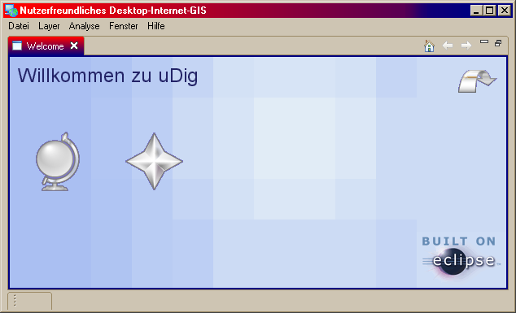
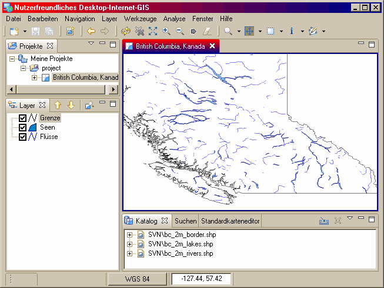

Wird die Anwendung uDig gestartet, wird das Arbeitsplatzfenster angezeigt.
Beim ersten Start wird das Willkommensfenster angezeigt. Klicken Sie auf den Pfeil "Den Arbeitsplatz betreten" (oder "Open Workbench"), damit die Arbeitsfläche sichtbar wird. Es ist jederzeit mölich, das Willkommensfenster wieder anzuzeigen, indem man im Hauptmenü Hilfe > Willkommen auswählt.

Die Arbeitsfläche kann aus mehreren Editorfenstern und anderen Fenstern wie z.B. dem Projektfenster bestehen. Mehrere Arbeitsplätze, also mehrere Instanzen von uDig, können gleichzeitig geöffnet sein.

Im Bild oben sind neben einer Karte das Projektfenster, das Layerfenster und das Katalogfenster geöffnet.
Weiter im Tutorial: 2 Editoren und weitere Fenster
(c) Copyright (c) 2004-2008 Refractions Research Inc. and others.